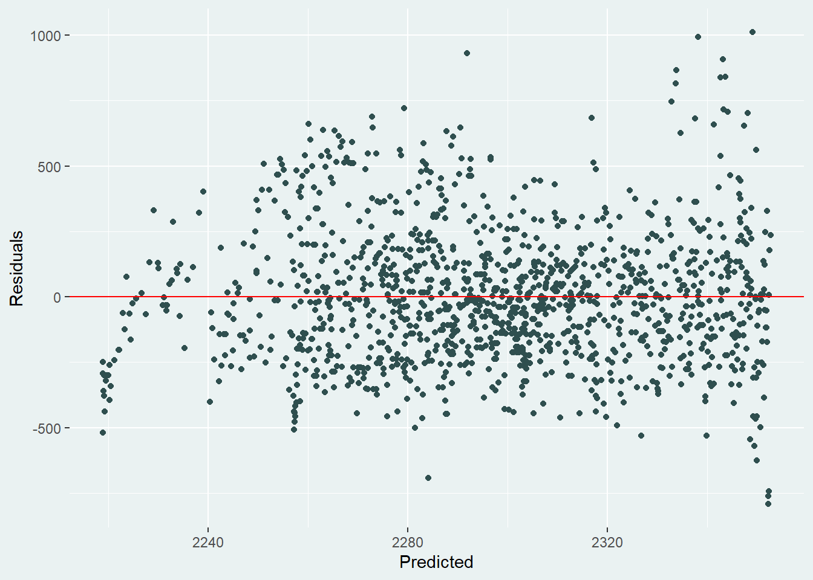

lemurs <- readr::read_csv('https://raw.githubusercontent.com/rfordatascience/tidytuesday/master/data/2021/2021-08-24/lemur_data.csv')reticulate-r-py-uv-demo
Some Introduction
What is Quarto
Quarto is an open-source scientific and technical publishing system that lets you combine narrative text with code to create reproducible and elegantly formatted output.
It is similar to Rmarkdown, a polished extension to it. A big feature of Quarto is that it also supports languages apart from R, like say Python.
Quarto documents have two main sections:
- the YAML header, where we specify document-wide properties such as the output format, and
- the content, which can include text, images, code, and more.
For this demo, we directly jump into the project without describing further about YAML and reticulate. You can find these additional details from Nicola’s blog post (Combining R and Python with {reticulate} and Quarto).
Lets start with reading the data. You can download the data from the #TidyTuesday repository.
library(reticulate)
# reticulate >= 1.41 has uv in backend
# No conda activation needed. Just declare dependencies.
# Optionally pin python version (leave out to use system default)
py_require(python_version = "3.13.9")
# Declare Python packages needed for this document
# py_require("statsmodels")
# statsmodels will automatically pull numpy, pandas, scipy etc.
# However, as reproducibility is the priority lets declare the exact versions.
py_require("statsmodels==0.14.6")
py_require("pandas==3.0.2")library(dplyr)
library(knitr)
lemur_data <- lemurs |>
filter(taxon == "ECOL",
sex == "M",
age_category == "adult") |>
select(c(age_at_wt_mo, weight_g)) |>
rename(Age = age_at_wt_mo,
Weight = weight_g)
kable(head(lemur_data))| Age | Weight |
|---|---|
| 129.90 | 2805 |
| 132.10 | 3001 |
| 140.32 | 2429 |
| 157.94 | 2597 |
| 164.58 | 2497 |
| 184.18 | 2225 |
Now, we can add a Python code block to fit a model: No need for py_install() or conda/poetry setup - the dependencies are already declared above.
# Access R objects via 'r' object
lemur_data_py = r.lemur_data
import statsmodels.api as sm
# Prepare data
y = lemur_data_py[["Weight"]]
x = lemur_data_py[["Age"]]
x = sm.add_constant(x)
# Fit OLS model
mod = sm.OLS(y,x).fit()
# Add predictions and residuals
lemur_data_py["Predicted"] = mod.predict(x)
lemur_data_py["Residuals"] = mod.resid
# Print model summary (optional)
print(mod.summary()) OLS Regression Results
==============================================================================
Dep. Variable: Weight R-squared: 0.015
Model: OLS Adj. R-squared: 0.014
Method: Least Squares F-statistic: 20.00
Date: Mon, 04 May 2026 Prob (F-statistic): 8.41e-06
Time: 20:51:01 Log-Likelihood: -9090.7
No. Observations: 1307 AIC: 1.819e+04
Df Residuals: 1305 BIC: 1.820e+04
Df Model: 1
Covariance Type: nonrobust
==============================================================================
coef std err t P>|t| [0.025 0.975]
------------------------------------------------------------------------------
const 2367.9420 17.248 137.285 0.000 2334.104 2401.780
Age -0.3867 0.086 -4.472 0.000 -0.556 -0.217
==============================================================================
Omnibus: 80.670 Durbin-Watson: 0.610
Prob(Omnibus): 0.000 Jarque-Bera (JB): 101.013
Skew: 0.576 Prob(JB): 1.16e-22
Kurtosis: 3.725 Cond. No. 490.
==============================================================================
Notes:
[1] Standard Errors assume that the covariance matrix of the errors is correctly specified.The key part here is the r. on line 1(or line 4 if you are looking at a .qmd file) - this tells {reticulate} to look in the R code for an object called lemur_data. You can think of this line as importing your data from R to Python. Other than that, it’s pretty standard Python code. Here, we’ve kept it very simple and fitted a linear model:
Obviously, R has the capabilities to fit a linear model, and for this simple example there’s no need for us to use Python. However, this illustrates how you might approach the problem, if you find yourself needing to use a particular library or model that you can only find in Python.
After we’ve fitted any type of model, we need to check the output. For linear regression, one of the most common methods of model inspection is to plot and analyse the residuals. Residuals tell us how far away a point is from the regression line. For linear models, the main assumption is that the errors are independent and normally distributed. If our data fits that assumption, we should see that:
the residuals are symmetric above and below 0; we don’t see any patterns in the residuals as the predicted values increase; most of the points are close to 0, and there are fewer points with higher magnitude of residual.
Whilst you can plot residuals in Python quite easily, in my opinion it’s hard to beat the quality of graphics you can achieve with {ggplot2} in R. So we include a final R code block to plot the residuals:
library(ggplot2)
# Access Python object 'lemur_data_py' via py$
lemur_residuals <- py$lemur_data_py
ggplot(data = lemur_residuals,
mapping = aes(x = Predicted,
y = Residuals)) +
geom_point(colour = "#2F4F4F") +
geom_hline(yintercept = 0,
colour = "red") +
theme(panel.background = element_rect(fill = "#eaf2f2",
colour = "#eaf2f2"),
plot.background = element_rect(fill = "#eaf2f2",
colour = "#eaf2f2"))